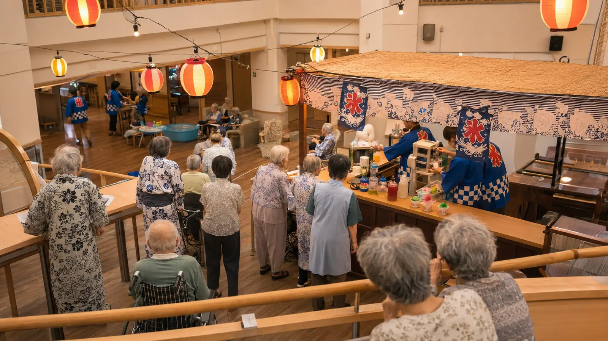

Monthly Care Report
2025年8月 (August 2025)
夏祭り、そして暑さとの向き合い方 — 夏季体制の強化
8月は猛暑日が続く厳しい月でしたが、施設内では夏祭りの賑わいも生まれました。冷房管理・水分補給・体調観察を徹底しつつ、入居者の方々と日本の夏を楽しむ取り組みを続けました。Care Support Pass のご支援を原資に、夏季電気代の自己負担化(冷房24時間運転の費用を施設側で負担)とスタッフ夏季手当の支給を実施できました。
Numbers
数字で見る今月
現入居者数
10名
新規ご入居
1名
活動イベント
4回
外部訪問者
32名
In Focus
今月の主な瞬間

Album
今月のひとこま


Story
今月の活動
今月の主な出来事
8月10日の夏祭りには、入居者ご家族・近隣の方を含め、計32名にお越しいただきました。スタッフ手作りのかき氷スタンド、宇治金時とイチゴシロップ。盆踊りは、車椅子の入居者の方々も椅子に座ったまま手拍子で参加できる工夫をしました。「久しぶりに、こんなに笑った」と仰る入居者の方の声が、私たちにとって最大のご褒美です。
暑さ対策の徹底
今夏は記録的な猛暑となり、特に高齢者にとっては命に関わる季節です。当施設では (1) 居室・共用部とも24時間冷房を徹底、(2) 毎日4回の水分補給ラウンド、(3) バイタル測定の頻度を朝夕の2回に増やすこと、を継続しました。結果、熱中症による体調不良の発生はゼロでした。
夏季体制の強化
Care Support Pass のご支援を原資に、夏季期間中(6月〜9月)の電気代を施設側で全額負担化しました。例年であれば入居者の方々の管理費に上乗せされていた冷房代を、今年からは施設負担としています。また、スタッフ全員に夏季手当(¥30,000)を支給。猛暑下の介護現場を支えるスタッフへの還元です。
来月の予定
- 9月15日: 敬老の日のお祝い (祝膳・記念品贈呈)
- 9月中旬: 屋上庭園の秋野菜植え付け (大根・水菜)
- 9月下旬: 防災訓練 (地震・火災対応)
Care Support Pass · Finance
支援者数 と 収支報告 — 12ヶ月推移
| 月 | 支援者数 | 月収入 | 累計 | 達成率 | 使い道(要約) |
|---|---|---|---|---|---|
| 25.6 | 1.2万名 | ¥120万 | ¥120万 | 4.8% | 導入初月のため、頂いた支援金は次月以降の入居者還元施策 |
| 25.7 | 3.8万名 | ¥380万 | ¥500万 | 15.2% | 入居者お一人あたり月額負担を ¥170,000 → ¥150,000 に減額 |
| 25.8 | 8.5万名 | ¥850万 | ¥1,350万 | 34.0% | 夏季電気代の施設負担化 |
| 25.9 | 14.5万名 | ¥1,450万 | ¥2,800万 | 58.0% | 看護師1名の常勤雇用 |
| 25.10 | 21万名 | ¥2,100万 | ¥4,900万 | 84.0% | 理学療法士1名の常駐雇用 |
| 25.11 | 25.6万名 | ¥2,560万 | ¥7,460万 | 102.4% | ★ 目標支援者数 25万人 達成 |
| 25.12 | 26.8万名 | ¥2,680万 | ¥1.0億 | 107.2% | 年末年始24時間医療体制を完全無料化 |
| 26.1 | 27.5万名 | ¥2,750万 | ¥1.3億 | 110.0% | 月次イベント予算を月¥30,000 → 月¥150,000 へ5倍化、全既存施策の継続 |
| 26.2 | 28.1万名 | ¥2,810万 | ¥1.6億 | 112.4% | 嚥下対応個別調整食の完全無償化(月¥165,000の負担軽減)、全既存施策の継続 |
| 26.3 | 28.8万名 | ¥2,880万 | ¥1.9億 | 115.2% | ご家族通信費補助 |
| 26.4 | 29.3万名 | ¥2,930万 | ¥2.2億 | 117.2% | 介護タクシー外出費の月1回まで施設負担化 |
| 26.5 | 29.8万名 | ¥2,980万 | ¥2.4億 | 119.2% | ★ Care Support Pass 導入1周年特別還元: スタッフ全員 初年度昇給+10% |
支援金の使い道 — 2025年8月
夏季電気代の施設負担化(月¥320,000)、スタッフ夏季手当(¥30,000 × 14名 = ¥420,000)、月額負担減額の継続。
From the Director